Pick a model to see real photos and full specifications. Switch to imperial units for overseas buyers, compare all five side by side, or configure a custom plant for your site.
1. Capacity and throughput are estimates and vary with soil conditions. 2. Based on an 8-hour working day. 3. Based on 2,000 kg of wet sand per cubic metre. Standard colour is steel grey; actual weight varies by configuration.
Every option below has been built for real customers. Mix them to match your gravel, your water and how you load the plant.
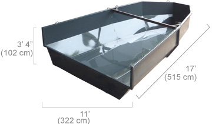
Best when unloading straight from a dumper or tipper truck.
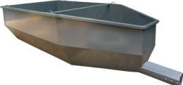
Sized to each machine; the everyday choice.
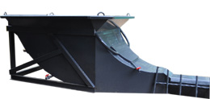
Load directly with a backhoe or excavator.
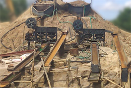
Increases throughput and washing capacity, with easy maintenance and fast scaling as your mine grows.
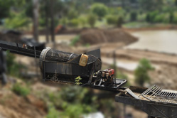
A trommel isolated from the jig and run as a separate unit, required with parallel jigs and for extra filtration.
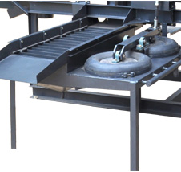
Filters gold-bearing black sand from the plant, usually driven from the main engine.
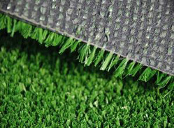
A specially designed carpet that captures fine gold particles from the black sand.
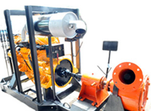
Pumps gem or gold gravel straight to the plant where excavators cannot reach.
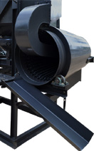
Turn waste into income: produce construction sand where demand is high.
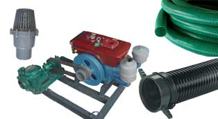
Pump kits with hoses and foot valve, and water splitters sized to your pump for the right pressure and flow.
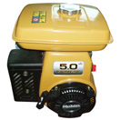
Portable and Small plants, 3,600 rpm.
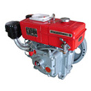
Medium plant. About 5 L of diesel a day.
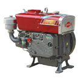
Large and XL plants. About 6 L of diesel a day.
Our team will recommend a standard model or design a custom plant, with price, delivery and shipping.